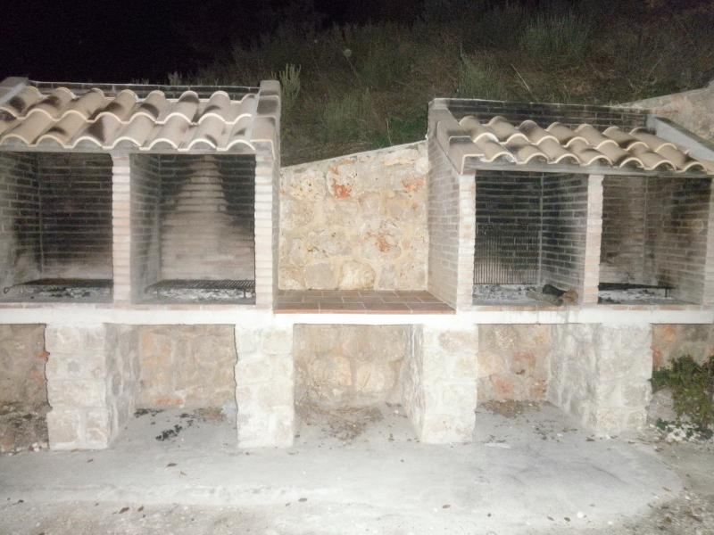

Servicios

Cocina completa
Salón con chimenea y televisión
Barbacoas en la zona exterior
Cada casa tiene un amplio porche
| Televisión | X |
| Aseo | X |
| Baño Completo | X |
| Porche con mesa exterior | X |
| Garaje cubierto de dos plazas | X |
| Parking privado exterior | X |
| Cocina completa* integrada en salón | X |
| Chimenea** | X |
| Calefacción | X |
| Terraza | X |
| Se admite animales de compañía | X |
| 4 Barbacoas*** | X |
| Zona exterior para juego de los niños | X |
| Servicio de auto-taxi a su disposicion. | X |
| Piscina. | X |
* La cocina contiene microondas, lavadora, horno, vitrocerámica, cafetera, utensilios y vajilla.
** Les dejamos dos cestos de leña. Si necesitan más, reponemos ambos cestos por sólo 5 €.
***A compartir con los 8 apartamentos. Hay disponibles bolsas de carbon para las barbacoas a 5 €.
Camas
Cada casa contiene hasta ocho plazas con el siguiente reparto de camas:
| Nombre | Medidas | Número |
|---|---|---|
| Cama de Matrimonio | 1.50 | 1 |
| Cama Dossel | 1.50 | 1 |
| Cama individual | 1.10 | 2 |
| Sofá Cama | 1.35 | 1 |
¿Cómo son los apartamentos?
Aprovechando un cortado del terreno cada una de las casas, de unos 170 m2, esta compuesta por 3 plantas y buhardilla. La planta baja de cada casa contiene un garaje cubierto independiente de dos plazas. La planta primera tiene dos habitaciones y un baño completo. Una habitación contiene dos camas individuales de 1,10 metros de ancho y la otra con una cama de matrimonio de 1.50 metros de ancho). La segunda planta contiene salón con cocina completa integrada y un aseo. La buhardilla contiene una magnifica cama Dossel de 1.50 metros de ancho y un sofá cama que se convierte en una confortable cama de 1.35 metros de ancho. Cada casa tiene una amplia terraza y un gran porche para disfrutar del aire libre sin salir del alojamiento. Cada casa ofrece los siguientes servicios: